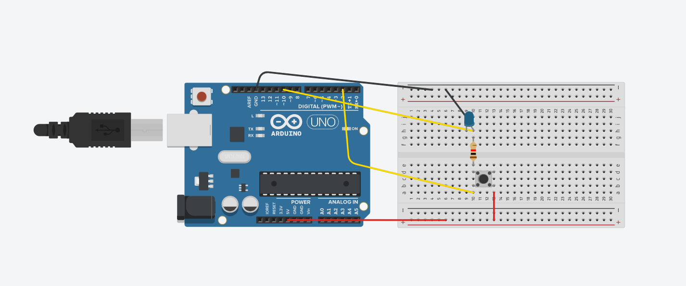
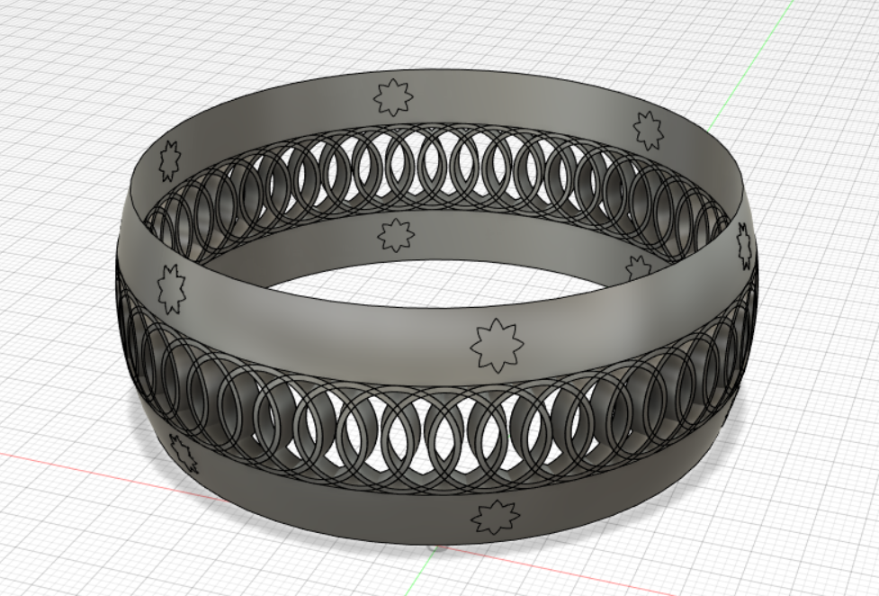

The first step of our assignment was to program a microcontroller to produce an output using at least one button for input. The code had to include a conditional statement and a for loop. With that being said, I tried to take two codes we had learnt previously this week and combine them into one. The first code was a conditional statement. It controlled the bulletin red LED on the microcontroller with the push of a button. The second code was a for loop, which allowed an LED light to fade once connected to the microcontroller. I wanted to create a circuit that would allow an LED light to fade with the push of a button. However, I faced a few struggles.
I started by applying the code and creating the circuit into Tinkercad. It showed me a few errors with my code and refused to let the circuit run, so I couldn't see its results. I will update this page once I figure it out. In the meantime, here's the circuit and the code.
The second step was to 3D model something in Fusion 360. I watched the tutorials assigned to us by our instructors and decided to make a ring. I learnt a lot of new things and had tons of fun creating it! This was the product:
The third and final step to conclude this assignment was to think about our final project. In our lab sessions, I spent some time talking to Victoria about how realistic my ideas are and whether it's in the scope of our course or not. Whether I needed to buy materials I didn't know where to find, or needed to buy overly expensive parts online that I wasn't sure how to tinker with, or thought of something that has already been done, I knew my ideas could be better. Our talk made me realize that I should think of simpler ideas that could be doable in a shorter time.